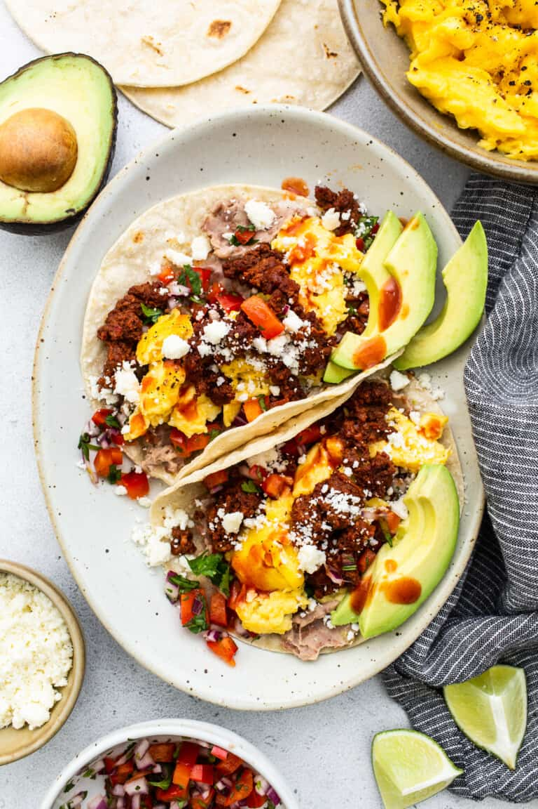

Breakfast Tacos!!!

These tacos are SOOOO GOOD
There is NOTHING better than breakfast tacos. I don't think they need to be so fancy looking. Just make them how you like!!! Yeah!!!
Here are the ingredients you'll need:
- HOT tortillas
- Scrambled eggs
- Some type of meat - I like breakfast sausages like Jimmy Dean!
I also like to add cheese, sour cream, chopped tomatos/onion, even guacamole or bacon if you have it!
Here's the list of steps you'll need to make AWESOME tacos:
- Turn on your pan
- Start the sausage first, since it takes the longest
- Warm up your tortillas and get your eggs ready
- Cook the eggs in the same pan once your sausage is done & plate immediately!
Back to index